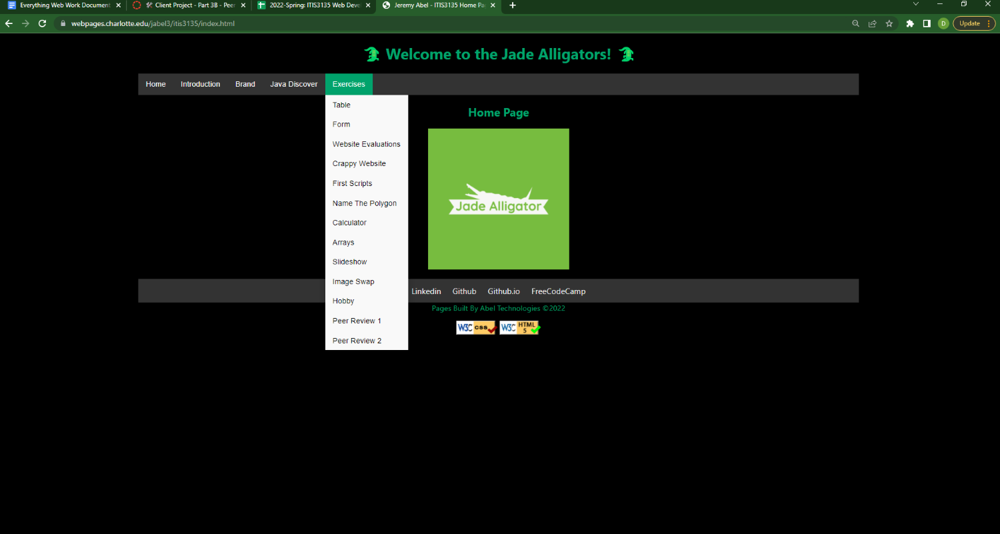

Clean site, with nicely formatted headers and footers.
File Management
The files in this site are organized very well and aesthetically pleasing. It is also very simple to find all the information that he has posted in his site.
The use of the drop down sub menu takes the site up many notches as it is something that I haven't seen incorporated in to many sites yet.
This makes his site look less cluttered and much more clean and organized.
Styles
The colors that were chosed for the main site is very easy on the eyes.
The subtle use of green to tie in with the mascot is a nice touch.
The site is consistent throughout with the color scheme.
The margins on the side accomodate for many screen sizes.
Font Choice is easy to read and looks clean.
Page Design
Again the margins keep the page looking professional and their consistency is very nice to see on all pages.
The site uses proper fonts and good colors to make the viewing experience enjoyable.
There isn't any annoying details that are painful to look at.
I like the aspect of pages built being not included in the background of the footer while also being a different color to stand out.
Validation
Validation buttons are formatted properly.
Hovering over the buttons the link ends with referer.
All pages fully validate with no errors.
Page Code
The page code works perfectly on all pages that have JS in them.
The HTML include is not being utilized, which could make the time spent copying and pasting not be wasted.
But other than that, this is a wonderful webpage and it definently does not look like a first website.